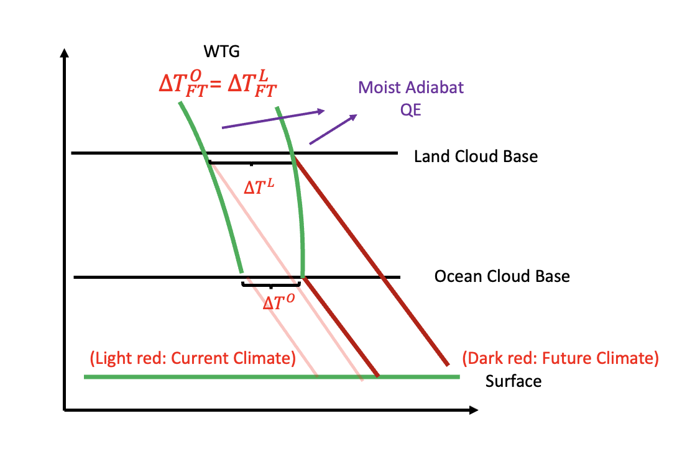
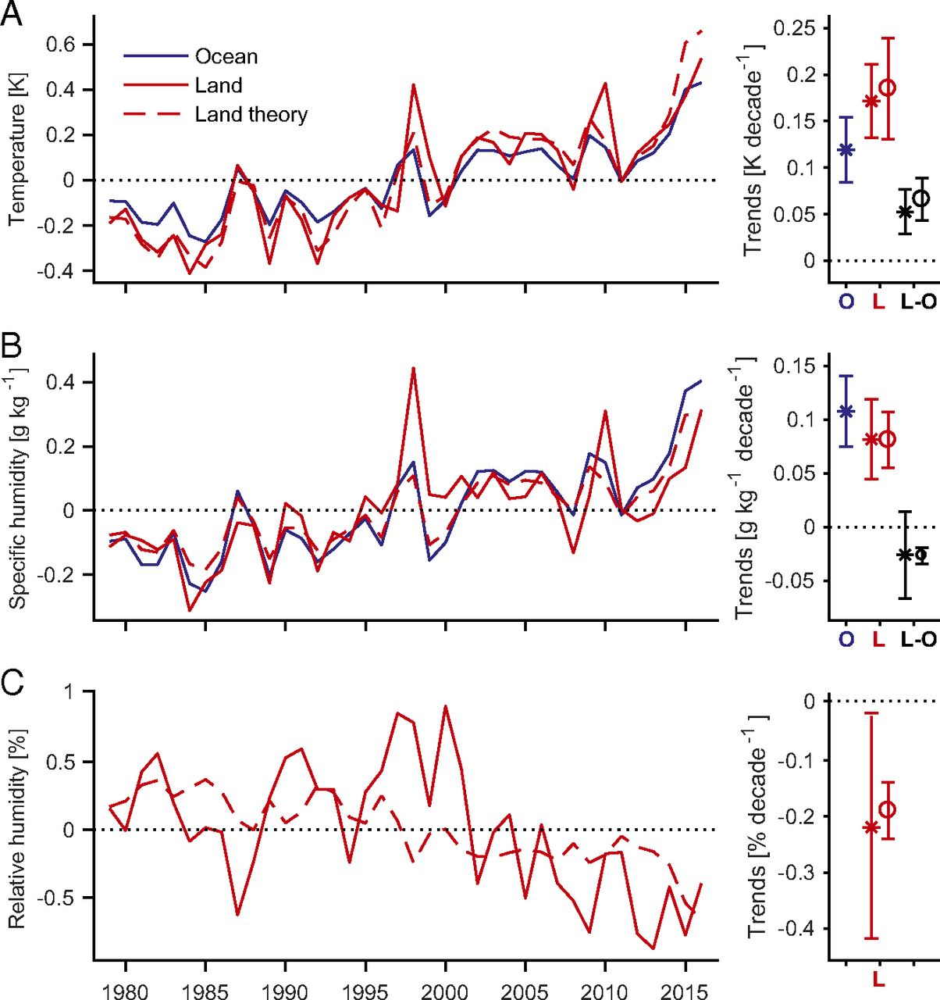

Week 11: The Projection of Future Hydrological Cycle
Contents
Week 11: The Projection of Future Hydrological Cycle¶
Studying the future change in the hydrological cycle is challenging given the uncertainty in many aspects, including the change in radiative boundary conditions and the dynamical structure. Fortunately, some dynamical constraints in the tropics provide means for the development of predictive theory. We will start with a weak temperature gradient.
Zeroth Order Assumption¶
WTG and QE¶
In the tropics, the moist adiabat dominates the vertical profile of saturated MSE regardless of land or ocean. Thus, for regions above the cloud base, they all share the same MSE profile. (Green curves in Fig. 33). As climate warms, the oceanic regions’ temperature below the cloud base shifts from the first light red line to the first dark red line. (i.e., \(\Delta T^{O}\)). The corresponding MSE profile shifts from the first green curve (on the left) to the second green curve (on the right) (i.e., \(\Delta T^{L}_{FT}=\Delta T^{O}_{FT}\)).
For land regions, the cloud base is usually higher than the ocean regions due to stronger CIN. Thus, starting from the cloud base over the land and following the dry adiabat to the surface, we can predict surface warming. In addition, given the zero buoyancy assumption (column MSE conserved, i.e., A-profile), we can go back down to the surface for both land and ocean. This implies the change in MSE is the same for both land and ocean. (the portion of dry static energy and latent energy can be different). (i.e., \(\delta h^{L}_{\text{surface}}=\delta h^{O}_{\text{surface}}\))
{kind=link}

Fig. 33 The conceptual model for tropical hydrological cycle. Modified from Duan, McKinnon and Simpson (2024) and Byrne and O’Gorman, PNAS (2018)¶
The Change in Specific/Relative Humidity¶
Some box model and trajectory model suggests that the ratio of change in specific humidity over the land and over the ocean remains constant. i.e.,
where \(\gamma<1\). We can set \(\gamma\) based on the current climate value.
Following the conclusion of \(\delta h^{L}_{\text{surface}}=\delta h^{O}_{\text{ocean}}\), one can easily show that based on the definition of MSE and linearized Clausius-Claperyon relationship.
(99) suggests that land warms more than the ocean and the relative humidity over land tends to decrease. Fig. 33 and equations (98), (99) form a simple predictive theory.
{kind=link}

Fig. 34 The predictive land temperature, specific humidity, and relative humidity (from Byrne and O’Gorman 2018, PNAS)¶
FIG11-2 adopted from Byrne and O’Gorman (2018) shows the predictive results. One can find that both temperature and specific humidity are precisely predicted by the theory. The prediction of relatively humidity is moderately well (capturing the trend but not the variability). The change in relative humidity is especially interesting to the community since it determines where the LCL might be.
The difference between land and ocean warming¶
From the framework above, one key ingredient in determining the warming difference between land and the ocean is the humidity difference, i.e., \(\gamma\). However, whether \(\gamma\) is a constant remains a question.
Change in Convection Intensity¶
While the discussion above focuses on the quasi-equilibrium of convective adjustment. It does not necessarily apply to convection. Based on simulations, most studies suggest an increase in CAPE, it is, however, the change in actual buoyancy is limited. This implies when convection develops, it might experience stronger entrainment than it had in the past.
Theory for zero buoyancy model (Dr. Marty Singh’s work)¶
According to plume-based cumulus parameterization, the vertical change in moist static energy can be written as
where \(\epsilon\) is the entrainment rate and \(h_e\) is the environment mse.
For regions above the cloud base, if we assume the change in buoyancy is small, then the change in saturated MSE is determined by the change in specific humidity.
We can further apply (101) to calculate temperature difference between the environment and unentrained parcel. (CAPE can be considered as the temperature difference between the air parcel and environment). i.e.,
(102) is interesting but not intuitive. It says (1) CAPE should increase with warming (almost exponentially) and (2) the decreases in the environment of relative humidity increase the CAPE.
One reason is that the environment temperature is determined by those convective plumes that experience entrainment. In a moister environment, those plumes are more populated which can maintain a warmer environment (because it has zero buoyancy!!). When the environment is moister and warmer, the temperature difference between unentrained plume (which we use to calculate CAPE!) will be smaller. This also explains why the convection over a drier environment is usually more intense than in a moist environment.